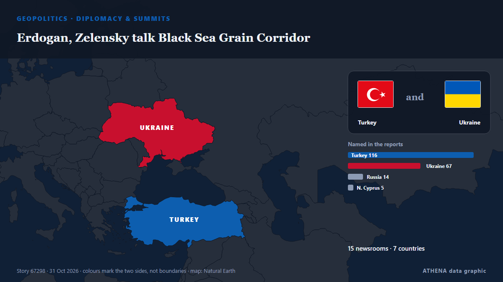

Erdogan, Zelensky talk Black Sea Grain Corridor

Turkish President Recep Tayyip Erdogan and Ukrainian President Volodymyr Zelensky agreed on Saturday to continue work on the Black Sea Grain Corridor, aimed at enabling grain shipments from Ukraine. von AzerNews
Unabhängig gemeldet von 15 Medien in 7 Ländern seit dem 30. Okt., zuerst von Anadolu Agency (English); die Berichterstattung breitet sich weiter aus. ATHENA stuft das Risiko als erhöht ein (5.1/10), vor allem wegen der Schwere des beschriebenen Schadens und des Tempos der Berichterstattung. Die Konfidenz liegt bei 91 % (hoch): 15 Medien bestätigen es unabhängig, bei einer mittleren Verlässlichkeit der Quellen von 79 %. Medien nach Land: Türkei (11), Ukraine (11), Aserbaidschan (4). Berichterstattung: 30. Okt. bis 31. Okt., 30 Stunden.
Warum es wichtig ist: Russlands Großangriff auf die Ukraine begann im Februar 2022. Dieser Tracker verfolgt die Kämpfe, Angriffe auf Infrastruktur und die Diplomatie rund um den Krieg, wie Redaktionen weltweit darüber berichten.
Was sich geändert hat: 22 neue Berichte von 13 Redaktionen in den 24 Stunden bis 31. Okt..
Erste Schlagzeile: Turkish President Erdogan stresses importance of enhancing ties with Turkmenistan
Schlagzeilen werden auf Englisch angezeigt, wie veröffentlicht.
Auf einen Blick
Ausgewählt, bewertet und geschrieben nach der veröffentlichten Methodik von ATHENA. Kein Redakteur greift in einzelne Ereignisse ein. So entsteht ATHENA ›
| 30 Oct 12:38 UTC | 3 |
|---|---|
| 30 Oct 14:38 UTC | 6 |
| 30 Oct 16:38 UTC | 1 |
| 30 Oct 18:38 UTC | 0 |
| 30 Oct 20:38 UTC | 1 |
| 30 Oct 22:38 UTC | 0 |
| 31 Oct 00:38 UTC | 0 |
| 31 Oct 02:38 UTC | 0 |
| 31 Oct 04:38 UTC | 0 |
| 31 Oct 06:38 UTC | 0 |
| 31 Oct 08:38 UTC | 0 |
| 31 Oct 10:38 UTC | 0 |
| 31 Oct 12:38 UTC | 5 |
| 31 Oct 14:38 UTC | 8 |
| 31 Oct 16:38 UTC | 8 |
| 30 Oct 13:23 UTC | 0.0 |
|---|---|
| 30 Oct 13:32 UTC | 2.4 |
| 30 Oct 14:57 UTC | 4.5 |
| 31 Oct 18:16 UTC | 5.1 |
Warum diese Zahlen
Bedeutung
Risiko
Konfidenz
Die Berichterstattung – wer berichtete, und wann
Schlagzeile wie veröffentlicht · öffnet das Original- Anadolu Agency (English) · TürkeiTurkish President Erdogan stresses importance of enhancing ties with Turkmenistan
- Turkish Minute · TürkeiErdoğan, Trump discuss ties, Ukraine and Middle East in successive calls
- Hürriyet Daily News · TürkeiErdoğan holds bilateral talks after Turkic summit
- Anadolu Agency (English) · TürkeiUkraine's Zelenskyy due in Türkiye on Saturday for talks with Turkish President Erdogan
- Arab News · Saudi-ArabienZelensky to visit Turkiye on Saturday for talks with Erdogan: Turkish presidency
- Ukrainska Pravda (English) · UkraineZelenskyy expected in Türkiye on 31 October
- Ukrinform (English) · UkraineZelensky to visit Türkiye on October 31, Turkish Presidency announces
- Kyiv Independent · UkraineZelensky to visit Istanbul on Oct. 31 to discuss Black Sea security situation, Turkey says
- Türkiye Today · TürkeiZelenskyy to meet Erdogan in Istanbul on Black Sea security, Ukraine peace talks
- Cyprus Mail · ZypernErdogan meets Erhurman, stresses importance of Turkish Cypriots’ rights
- Türkiye Today · TürkeiTurkish FM Fidan meets Rubio as Zelenskyy prepares for Türkiye visit
- Kyiv Independent · UkraineZelensky arrives in Istanbul for 'important talks' with Turkey's Erdogan
- Kyiv Post · UkraineZelensky Arrives in Turkey for Talks With Erdogan on Black Sea Safety
- Ukrainska Pravda (English) · UkraineZelenskyy arrives in Türkiye on official visit
- News of Bahrain · BahrainZelensky arrives in Istanbul for talks with Erdogan
- AzerNews · AserbaidschanZelensky arrives in Istanbul for Erdogan talks
- Anadolu Agency (English) · TürkeiTurkish President Erdogan welcomes Ukrainian counterpart in Istanbul
- Ukrainska Pravda (English) · UkraineTurkish president receives Zelenskyy in Istanbul
- Hürriyet Daily News · TürkeiErdoğan, Zelensky meet on war and Black Sea security
- APA (English) · AserbaidschanAttacks on civilian vessels could further escalate tensions in Black Sea: Turkish president
- Ukrainska Pravda (English) · UkraineZelenskyy says Ukraine and Türkiye have agreed to work on Black Sea grain corridor
- Anadolu Agency (English) · TürkeiAttacks on civilian vessels could further escalate tensions in Black Sea: Turkish president
- Arab News · Saudi-ArabienErdogan takes Russia, Ukraine to task over Black Sea attacks
- APA (English) · AserbaidschanZelenskyy: We reached agreement with Erdoğan on the continuation of the Black Sea Grain Corridor's operation
- Anadolu Agency (English) · TürkeiZelenskyy says he agreed with President Erdogan to work on establishing new Black Sea grain corridor
- Türkiye Today · TürkeiZelenskyy says he agreed with Erdogan to work on Black Sea grain corridor
- Ukrinform (English) · UkraineZelensky, Erdogan discuss ways to unblock Black Sea
- Ukrainska Pravda (English) · UkraineTürkiye's Erdoğan calls on Russia and Ukraine to act responsibly in Black Sea
- Kurdistan24 (English) · IrakErdogan Condemns Attacks on Civilian Ships in Black Sea, Urges Russia and Ukraine to Show Restraint
- Ukrinform (English) · UkraineZelensky, Erdogan discuss possibility of holding peace talks in Türkiye
- Asharq Al-Awsat (English) · Saudi-ArabienErdogan Takes Russia, Ukraine to Task Over Black Sea Attacks
- AzerNews · AserbaidschanErdogan, Zelensky talk Black Sea Grain Corridor